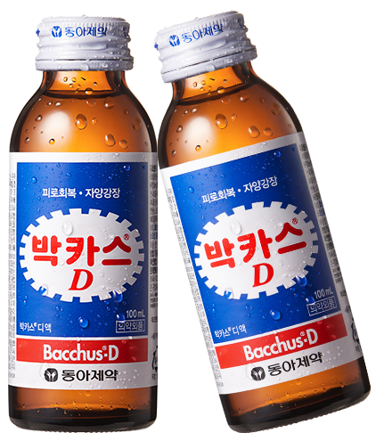
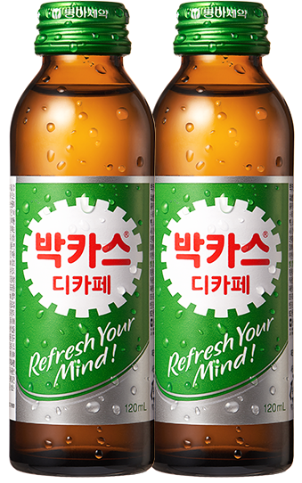

대한민국 피로 회복제
당신의 피로회복제는?
박카스 CF "군인편"
박카스 Bacchus
우리가 만들고 제공하는 모든 제품은 국민 건강에 이바지해야 한다.
제품비교

박카스 D
타우린 2,000mg 함유- 제품분류
- 의약외품 → 자양강장변질제
- 효능ㆍ효과
- 육체피로, 병후의 체력저하, 식욕부진, 영양장애, 발열성, 소모성 질환 등의 경우 영양보급, 자양강장, 허약체질
- 판매처
- 약국
- 용법/용량
- 15세 이상 성인 : 1일 1회 1병을 복용한다.
15세 미만은 복용하지 않는다.

박카스 F
타우린 1,000mg와 DL-카르니틴 성분 함유- 제품분류
- 의약외품 → 자양강장변질제
- 효능ㆍ효과
- 자양강장, 허약체질, 육체피로, 병후의 체력저하, 식욕부진, 영양장애
- 판매처
- 편의점, 할인점, 마트, 슈퍼 등
- 용법/용량
- 15세 이상 성인 : 1일 1회 1병을 복용한다.
15세 미만은 복용하지 않는다.
박카스 디카페
타우린 1,000mg와 L-아르기닌 성분 함유- 제품분류
- 의약외품 → 자양강장변질제
- 효능ㆍ효과
- 자양강장, 허약체질, 육체피로, 병중병후, 발열성 소모성질환의 영양보급
- 판매처
- 약국, 편의점, 할인점, 슈퍼, 온라인 등
- 용법/용량
- 성인 1일 1회 1병을 복용한다.
만 14세 이하는 복용하지 않는다.
